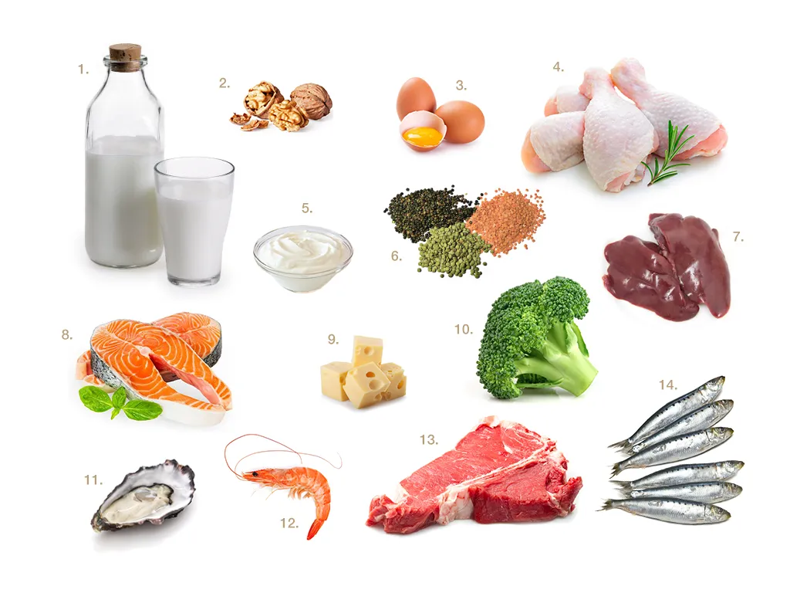

Let's start with something nobody likes to admit: grey hair doesn't always arrive on schedule. It can show up early, accelerate suddenly, and respond — genuinely respond — to what you're eating, how you're sleeping, and how much chronic stress you're carrying around. Lifestyle, pollution, and nutritional gaps all play a real role in how your hair ages. The good news is that some of that is in your hands.
Exercise helps too — regular movement improves circulation, and better blood flow means better delivery of nutrients to your scalp and follicles. But let's talk about what you can put on your plate. Because some of the most effective hair support isn't in a supplement aisle. It's in your kitchen.
Hair that's well-nourished from within carries a quality no product can replicate.
The best hair treatment you own isn't in a bottle. It's in your grocery basket — and it's been there all along.
The 14 Foods That Actually Make a Difference
These aren't obscure superfoods or supplements with a long list of caveats. They are real, accessible ingredients that work together to support hair color, strength, and shine from the inside. Here's what they are and why each one earns its place.

The 14: milk · walnuts · eggs · chicken · yogurt · lentils · liver · salmon · cheese · broccoli · oysters · shrimp · red meat · sardines
The Nutrient Your Hair Can't Do Without
B vitamins — and B12 in particular — are foundational for hair health. They support red blood cell production, which carries oxygen and nutrients to the scalp. When B12 is low, hair can lose color, thin, and become dull before its time.
Salmon, eggs, chicken, and liver are all excellent sources of B12. Lentils are a plant-based powerhouse here too — they're rich in B9 (folate) and B12, and they actively support red blood cell production, which helps your body retain hair color longer. If you eat legumes regularly, consider adding chickpeas alongside your lentils — they carry similarly impressive levels of B9 and B12, and the combination is genuinely effective.
One important note: as we get older, our ability to absorb B12 from food can decrease. It's worth having your levels checked if greying has been accelerating — sometimes the fix is simpler than you'd think.
Build the Foundation From Within
Hair is almost entirely made of protein — keratin, specifically. So it follows that a diet low in quality protein will show up in your hair before it shows up anywhere else: in texture, in thickness, and in how quickly it grows. Protein also helps your body absorb and retain B12 more effectively, which makes it doubly important for hair color.
Chicken is one of the best sources for hair health — it's protein-dense and packed with B vitamins that support follicle function. But you don't need to rely on a single source. Eggs, yogurt, cheese, red meat, and sardines all contribute meaningfully. If you eat a plant-forward diet, lentils, beans, and nuts are solid alternatives — just be more intentional about combining them through the day.
Shellfish: The Shine You're Missing
Shrimp and oysters are quietly one of the most underrated additions to a hair-focused diet. They're loaded with zinc, a mineral that plays a direct role in hair tissue growth and repair, and helps keep the oil glands around your follicles working properly. Low zinc is one of the most common (and most overlooked) causes of hair loss and dullness.
Shellfish also deliver omega-3 fatty acids — the oils responsible for that mirror-like shine that no dry shampoo can replicate. Salmon and sardines are particularly rich in omega-3, along with selenium and B12. If you're eating salmon twice a week, your hair is already benefiting — even if you haven't noticed yet.
Zinc deficiency is more common than it gets credit for, and one of its earliest signs is changes in hair — slower growth, increased shedding, loss of shine. Oysters are the single richest dietary source of zinc available. A serving of six oysters delivers more zinc than almost any other food on this list combined.
Walnuts and Liver — The Melanin Protectors
This is the part of the conversation that surprises most people. Copper has a direct relationship with melanin production — and melanin is what gives your hair its color. Without sufficient copper, melanin production slows, and grey appears sooner and faster than it otherwise would.
Walnuts are one of the best dietary sources of copper, and they're also rich in selenium, zinc, and vitamin E. A small handful a day is genuinely worth making a habit. Liver is even more mineral-dense — packed with copper, iron, zinc, and B12 together, it's one of the most nutrient-complete foods you can eat for hair health. If you're not eating liver regularly, you might want to rethink that. Even once a week makes a measurable difference.
Broccoli: Quiet, Essential, Easy
Broccoli is loaded with folic acid — B9 — which supports cell renewal and the overall health of your scalp tissue. It also contains vitamin C, which helps your body absorb iron more effectively, and sulforaphane, which has been studied for its role in reducing oxidative stress. Oxidative stress is one of the key drivers of premature greying, which makes broccoli more useful than its humble reputation suggests.
It doesn't need to be complicated. Steam it, roast it, add it to whatever you're already cooking. Just make it a regular presence on your plate — a few times a week is enough to make a real contribution to your body's overall hair health picture.
Your Quick-Reference Shopping List
Here's every food from this post, organized at a glance:
Your hair is paying attention to everything you do.
Eating well-balanced meals that support your body's overall health is the most reliable beauty investment there is. You don't need to overhaul your diet overnight — just start adding these ingredients consistently, one week at a time. Your hair will notice before you do.